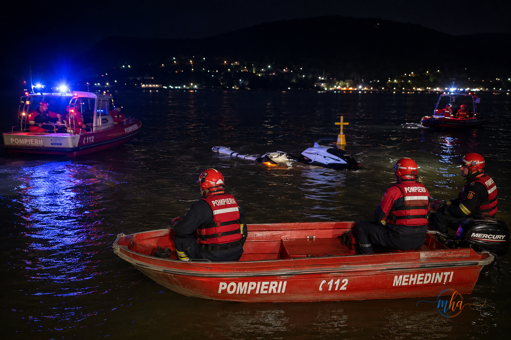

În această seară, un grav accident naval s-a produs pe Dunăre, în zona Club Vella, pe raza localității Dubova, după ce o ambarcațiune de tip skyjet/barcă s-ar fi răsturnat în urma impactului cu o geamandură. Potrivit informațiilor transmise de ISU Mehedinți, în urma incidentului două persoane au căzut în apă. La locul evenimentului a fost trimis de urgență un echipaj SMURD din cadrul Stației Dubova, iar pentru sprijin au fost mobilizate o autospecială de primă intervenție și comandă (APIC) cu barcă și trei subofițeri. O persoană de sex feminin a fost recuperată în siguranță din apă. Ulterior, aceasta a fost preluată de civili aflați în zonă și transportată la pensiunea unde era cazată. Echipajul SMURD s-a deplasat la unitatea de cazare pentru evaluarea medicală a victimei și acordarea îngrijirilor necesare. Cea de-a doua persoană, un bărbat, este în continuare căutată de echipele de intervenție, care desfășoară operațiuni pe apă în încercarea de a o găsi cât mai rapid. Circumstanțele producerii accidentului urmează să fie stabilite de autoritățile competente, primele date indicând că ambarcațiunea s-ar fi răsturnat după ce a lovit o geamandură de pe fluviu. Mehedinți Azi va reveni cu informații oficiale pe măsură ce acestea vor fi comunicate de autorități.
Alertă pe Dunăre! O ambarcațiune s-a răsturnat la Dubova, operațiuni de căutare în desfășurare
În această seară, un grav accident naval s-a produs pe Dunăre, în zona Club Vella, pe raza localității Dubova, după ce o ambarcațiune de tip skyjet/barcă s-ar fi răsturnat în urma impactului cu o geam

Foto: MehedintiAzi.ro